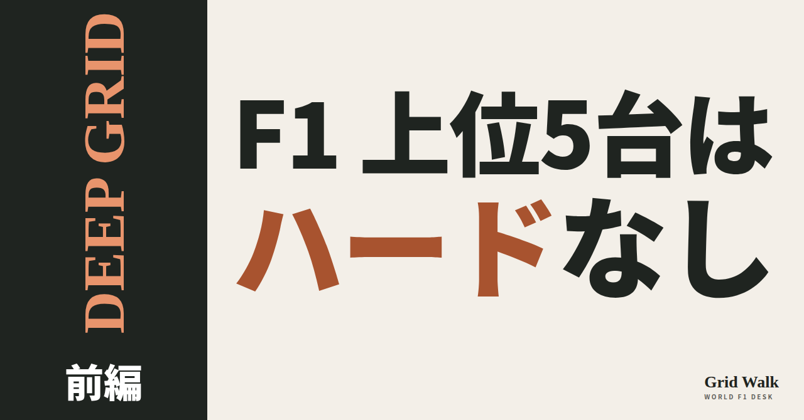
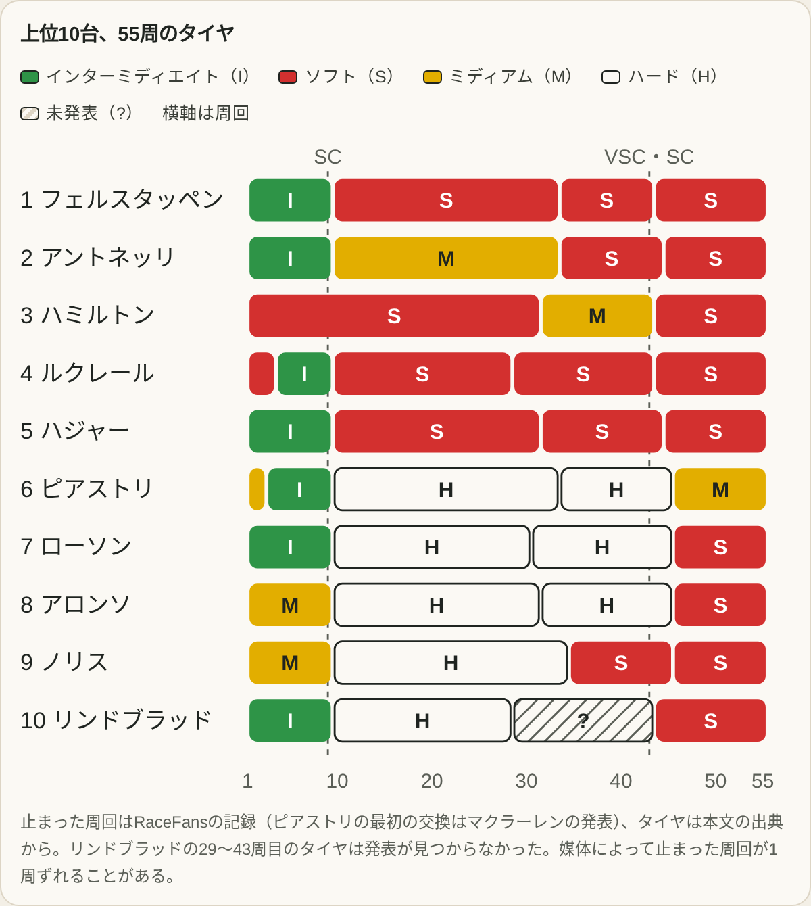
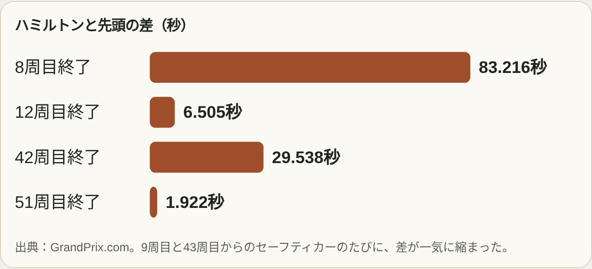
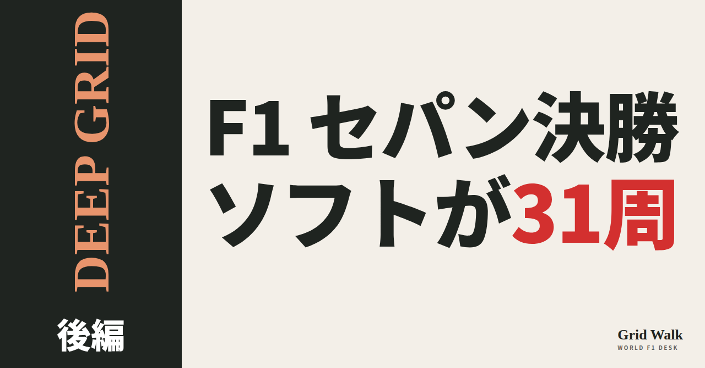
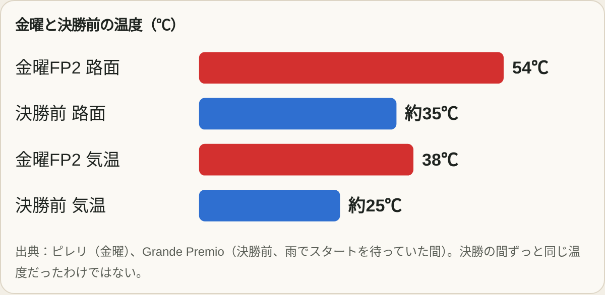
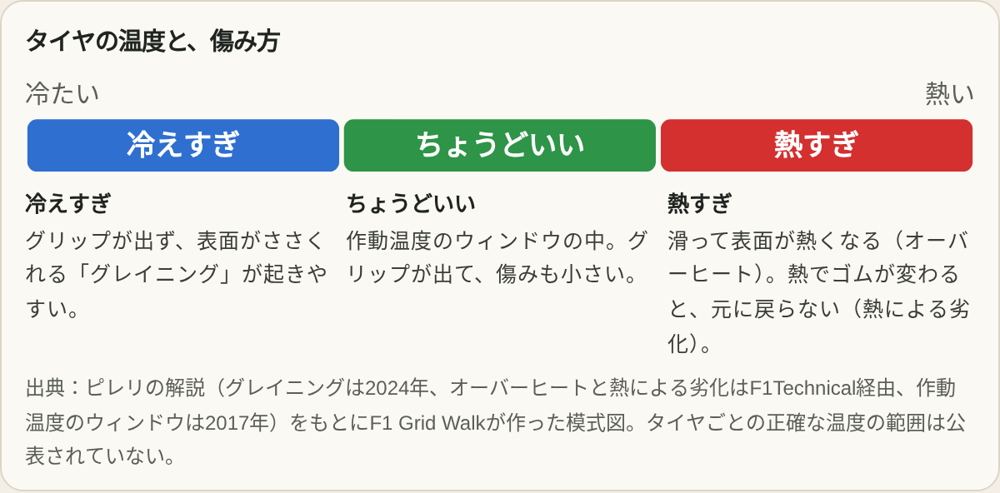
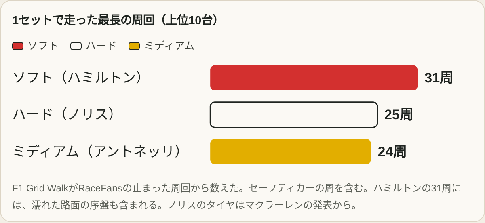

<title>セパンのタイヤ note貼り付け</title>
<style>
/* one column of numbered paste steps; text steps vs image steps differ by marker */
:root{--bg:#F5F4F0;--card:#FFFFFF;--ink:#1D2321;--mute:#5F665F;--line:#DCDAD2;--btn:#1F5FBF;--btnok:#2E8B4F;--img:#E9F3EC;--imgink:#22663B;--sans:'IBM Plex Sans JP','Hiragino Sans','Noto Sans JP',sans-serif}
@media (prefers-color-scheme:dark){:root:not([data-theme="light"]){--bg:#171A19;--card:#202423;--ink:#ECEDE8;--mute:#A3AAA2;--line:#343937;--btn:#4D8BE6;--btnok:#3FA866;--img:#1E2C23;--imgink:#8FD3A6;color-scheme:dark}}
:root[data-theme="dark"]{--bg:#171A19;--card:#202423;--ink:#ECEDE8;--mute:#A3AAA2;--line:#343937;--btn:#4D8BE6;--btnok:#3FA866;--img:#1E2C23;--imgink:#8FD3A6;color-scheme:dark}
body{background:var(--bg);color:var(--ink);font-family:var(--sans);font-size:15px;line-height:1.75;padding:20px 16px 60px}
main{max-width:680px;margin:0 auto;display:grid;gap:28px}
header h1{font-size:22px;margin:0 0 6px;text-wrap:balance}
header p{margin:0;color:var(--mute);font-size:14px}
nav{display:flex;gap:8px;flex-wrap:wrap;margin-top:12px}
nav a{border:1px solid var(--line);border-radius:999px;padding:4px 14px;color:var(--ink);text-decoration:none;font-size:14px;background:var(--card)}
.part h2{font-size:18px;line-height:1.5;margin:0 0 12px;text-wrap:balance;display:flex;gap:10px;align-items:baseline;flex-wrap:wrap}
.tag{font-size:13px;background:var(--ink);color:var(--bg);border-radius:6px;padding:1px 9px}
.steps{list-style:none;margin:0;padding:0;display:grid;gap:12px}
.st{background:var(--card);border:1px solid var(--line);border-radius:12px;padding:12px;min-width:0}
.hd{display:flex;align-items:center;gap:8px;margin-bottom:8px}
.no{width:26px;height:26px;border-radius:50%;background:var(--btn);color:#fff;display:inline-flex;align-items:center;justify-content:center;font-size:13px;font-weight:700;flex:0 0 26px}
.im .no{background:var(--btnok)}
.hd em{font-style:normal;font-size:12px;background:var(--img);color:var(--imgink);border-radius:6px;padding:0 8px}
.bx{font-size:13.5px;line-height:1.7;border:1px solid var(--line);border-radius:8px;padding:8px 10px;max-height:110px;overflow:auto;overflow-wrap:anywhere}
.bx.tall{max-height:150px}.bx p{margin:0 0 6px}.bx h2{font-size:14px;margin:8px 0 4px}.bx a{color:var(--btn)}
.st img{display:block;width:100%;max-width:100%;border:1px solid var(--line);border-radius:8px}
.sub{font-size:12.5px;color:var(--mute);margin:6px 0 0}
.cp{width:100%;margin-top:8px;padding:12px;border:0;border-radius:10px;background:var(--btn);color:#fff;font:600 15px var(--sans);cursor:pointer}
.cp.ok{background:var(--btnok)}.cp:focus-visible{outline:3px solid var(--ink);outline-offset:2px}
.xh{font-size:15px;margin:20px 0 10px}
.fb{font-size:13px;line-height:1.7;margin:8px 0 0;padding:8px 10px;border-radius:8px;background:var(--img);color:var(--imgink)}
.toast{font-size:13px;color:var(--mute);margin-top:6px}
</style>
<main>
<header><h1>セパンのタイヤ note貼り付け</h1><p>上から順に、コピーして note に貼ってください。青い番号は文章、緑の番号は画像です。画像は「画像をコピー」で入らないときは、画像を長押しして保存し、note の「画像を追加」から入れてください（パソコンは右クリック→「画像をコピー」）。</p>
<nav><a href="#a">前編</a><a href="#b">後編</a></nav></header>
<section class="part" id="a"><h2><span class="tag">前編</span>F1セパン決勝のタイヤ【前編】上位5台はハードを使わなかった</h2><ol class="steps"><li class="st im"><div class="hd"><span class="no">1</span><b>見出し画像</b><em>画像</em></div><a href="img/a-eye.png" target="_blank" rel="noopener"></a><p class="sub">note の「見出し画像」に設定</p><button class="cp" data-img="img/a-eye.png">画像をコピー</button><p class="fb" hidden>コピーできないときは、上の画像を長押しして「写真に保存」→ note で「画像を追加」から入れてください。パソコンは画像を右クリック→「画像をコピー」でも入ります。</p></li><li class="st"><div class="hd"><span class="no">2</span><b>タイトル</b></div><div class="bx" id="a1">F1セパン決勝のタイヤ【前編】上位5台はハードを使わなかった</div><button class="cp" data-plain="a1">タイトルをコピー</button></li><li class="st"><div class="hd"><span class="no">3</span><b>本文 その1</b></div><div class="bx tall" id="a2"><p>レース前の予想は「ミディアムとハードで2回止まる」。ところが、セパンの決勝で上位5台は、いちばん硬いハードを1周も使わなかった。主役はいちばん柔らかいソフト。各車がどのタイヤを何周使い、どれくらいの速さだったのか。決勝のタイヤを、数字で振り返る。</p><p>全文と表は F1 Grid Walk で → <a href="https://f1gridwalk.github.io/deep/tyres-sepang-race/?utm_source=note&amp;utm_campaign=tyres-sepang-race">https://f1gridwalk.github.io/deep/tyres-sepang-race/?utm_source=note&amp;utm_campaign=tyres-sepang-race</a></p><h2>先に結論</h2><p>① レース前、ピレリが勧めた作戦は「ミディアム→ハード→ハード」か「ソフト→ハード→ハード」の2回止まる形だった。ところが決勝の上位5台は、ハードを1周も使わなかった。上位10台でハードを使ったのは、6〜10位の5台だ。</p><p>② 主役は、いちばん柔らかいソフトだった。ハミルトンはスタートで履いたソフト1セットで31周を走った（セーフティカーの周を含む）。ピレリは「ソフトは特に競争力があり、とても長いスティントを可能にした」とまとめている。</p><p>③ 分かれ道は9周目。セーフティカーの間に、インターミディエイトの車がドライタイヤに替えた。フェルスタッペンはソフト、メルセデスの2台はミディアム。13周目の再スタートで、フェルスタッペンはアントネッリを抜いた。</p><p>④ ハードが遅かったわけではない。GrandPrix.comによると、35〜42周目、ハードのピアストリの平均は1分40秒723で、ソフトのフェルスタッペンを「わずかに上回った」。ストロールも「ハードはとても頑丈だった」と話している。</p><p>⑤ 最後を決めたのは、終盤のセーフティカーと、替えたばかりのソフト。上位10台は全員43〜45周目に止まった。ハミルトンは42周目終了で29.538秒あった差が51周目終了で1.922秒になり、最後に3位へ。最速ラップの上位3人は、全員が最後のソフトで記録した。</p><h2>理由と背景</h2><p>▶ レース前の予想は「ハードで2回」。セパンに持ち込まれたのは、硬い順にハード（C2）、ミディアム（C3）、ソフト（C4）。ピレリが勧めたのは「ミディアム→ハード→ハード」か「ソフト→ハード→ハード」の2回止まる作戦で、金曜のタイヤの劣化は1周0.2〜0.3秒だった。レッドブルは金曜のあと、フェルスタッペンのハードを1セットピレリに返していた（RacingNews365）。</p><p>▶ スタートはインターミディエイト9台、ドライタイヤ13台。路面はなかなか乾かず、ソフトのまま走り続けたハミルトンは、8周目を終えて18番手、先頭から83.216秒遅れていた。</p></div><button class="cp" data-rich="a2">本文 その1をコピー</button></li><li class="st im"><div class="hd"><span class="no">4</span><b>図① 上位10台、55周のタイヤ</b><em>画像</em></div><a href="img/a-f1.png" target="_blank" rel="noopener"></a><p class="sub">本文の続きに画像として挿入</p><button class="cp" data-img="img/a-f1.png">画像をコピー</button><p class="fb" hidden>コピーできないときは、上の画像を長押しして「写真に保存」→ note で「画像を追加」から入れてください。パソコンは画像を右クリック→「画像をコピー」でも入ります。</p></li><li class="st"><div class="hd"><span class="no">5</span><b>本文 その2</b></div><div class="bx tall" id="a4"><p>▶ 図の赤がソフト、白がハード。上位5台には白が1本もない。全員が9周目と43〜45周目、2回のセーフティカーで止まっている。</p><p>▶ 分かれ道は9周目のセーフティカー。フェルスタッペンはソフト、メルセデスの2台はミディアムを選んだ。13周目の再スタートで、フェルスタッペンは1〜2コーナーでアントネッリを抜き、差は42周目終了で11.989秒まで広がった。ラッセルは「ミディアムで少し苦しみ、ソフトになってずっと良くなった」と話している。</p><p>▶ ハミルトンはスタートのソフト1セットで31周。1回目のセーフティカーで差は6.505秒に縮まり、2回目では29.538秒が1.922秒に。53周目にハジャーを抜いて3位に上がった。</p></div><button class="cp" data-rich="a4">本文 その2をコピー</button></li><li class="st im"><div class="hd"><span class="no">6</span><b>図② ハミルトンと先頭の差</b><em>画像</em></div><a href="img/a-f2.png" target="_blank" rel="noopener"></a><p class="sub">本文の続きに画像として挿入</p><button class="cp" data-img="img/a-f2.png">画像をコピー</button><p class="fb" hidden>コピーできないときは、上の画像を長押しして「写真に保存」→ note で「画像を追加」から入れてください。パソコンは画像を右クリック→「画像をコピー」でも入ります。</p></li><li class="st"><div class="hd"><span class="no">7</span><b>本文 その3</b></div><div class="bx tall" id="a6"><p>▶ ハードを使ったのは6〜10位の中団。ピアストリはハードで35〜42周目の平均1分40秒723と、ソフトのフェルスタッペンを「わずかに上回った」（GrandPrix.com）。ストロールも「ハードはとても頑丈」。ただ、ソフトでも長く走れたので、上位のチームはハードに頼らずに済んだ。なぜソフトが持ったのかは、後編で解説している。</p><p>後編「ソフトが31周。あなたなら、この理由をどう説明する？」も、F1 Grid Walk で公開しています。 → <a href="https://f1gridwalk.github.io/deep/tyres-why-sepang/">https://f1gridwalk.github.io/deep/tyres-why-sepang/</a></p><h2>続きは F1 Grid Walk で</h2><p>ここから先の詳しい「理由と背景」と「データと記録」は、F1 Grid Walk の記事ページで読めます。グラフは指で触ると数字が出ます。表、出典の一覧もあります。</p><p><strong>DEEP GRID セパンのタイヤ 前編「上位5台はハードを使わなかった」</strong></p><p><a href="https://f1gridwalk.github.io/deep/tyres-sepang-race/">https://f1gridwalk.github.io/deep/tyres-sepang-race/</a></p><p>━━━━━━━━━━</p><p><strong>F1 Grid Walk では、世界のF1ニュースを毎日日本語でまとめています。</strong></p><p>海外の記事の要約を、毎日載せています。</p><p>ほかの海外記事も読みたい方は、F1 Grid Walkへ。</p><p><a href="https://f1gridwalk.github.io/">https://f1gridwalk.github.io/</a></p><p>━━━━━━━━━━</p><p><a href="https://press.pirelli.com/sepang-debuts-the-intermediates-and-crowns-verstappen/">出典：Pirelli</a></p><p><a href="https://www.grandprix.com/races/bahrain-gp-2026-race-analysis.html">出典：GrandPrix.com</a></p><p><a href="https://www.racefans.net/2026/10/04/2026-bahrain-grand-prix-in-malaysia-interactive-data-lap-charts-times-and-tyres/">出典：RaceFans</a></p><p><a href="https://www.formula1.com/en/latest/article/verstappen-wins-rain-hit-bahrain-gp-in-malaysia-over-antonelli-as-russell-retires-late-on.6qfpIHPch8mIVj2YgfHdCp">出典：Formula1.com</a></p><p><a href="https://www.formula1.com/en/latest/article/what-the-teams-said-race-day-in-bahrain-2026.4kwHL7ygJLqVlSMHhAj6ce">出典：Formula1.com</a></p><p><a href="https://www.formula1.com/en/latest/article/what-tyres-will-the-teams-and-drivers-have-for-the-2026-bahrain-grand-prix-in-malaysia.4vcrMxYY9DWg7PwyiNMrEV">出典：Formula1.com</a></p><p><a href="https://grandepremio.com/en/f1/verstappen-and-leclerc-face-sepang-strategy-twist-with-only-one-hard-tyre-set/">出典：Grande Premio</a></p><p><a href="https://racingnews365.com/has-red-bull-made-a-strategic-blunder-that-could-cost-max-verstappen-in-malaysia">出典：RacingNews365</a></p></div><button class="cp" data-rich="a6">本文 その3をコピー</button></li><li class="st"><div class="hd"><span class="no">8</span><b>ハッシュタグ</b></div><div class="bx" id="a7">#F1 #F1jp #DEEPGRID #セパン #マレーシア #タイヤ #ピレリ #F1解説 #フォーミュラ1 #モータースポーツ #F1ニュース #海外F1 #F1好きと繋がりたい #F1GridWalk</div><button class="cp" data-plain="a7">ハッシュタグをコピー</button></li></ol><h3 class="xh">X に投稿（note を公開したあと）</h3><ol class="steps"><li class="st"><div class="hd"><b>① note からシェアするときに添える文</b></div><div class="bx" id="ax0">【前編】F1セパン決勝、上位5台はハードを1周も使いませんでした。予想は「ハードで2回」、主役は柔らかいソフト。ハミルトンはスタートのソフト1セットで31周。全車のタイヤをグラフでnoteにまとめました #F1jp #DEEPGRID</div><button class="cp" data-plain="ax0">コピー</button></li><li class="st"><div class="hd"><b>② ①への返信</b></div><div class="bx" id="ax1">全文と表は F1 Grid Walk で。
https://f1gridwalk.github.io/deep/tyres-sepang-race/?utm_source=x&amp;utm_campaign=tyres-sepang-race</div><button class="cp" data-plain="ax1">コピー</button></li><li class="st"><div class="hd"><b>③ ②への返信</b></div><div class="bx" id="ax2">毎日の海外F1ニュースは、日本語でこちらにまとめています。
https://f1gridwalk.github.io/</div><button class="cp" data-plain="ax2">コピー</button></li></ol></section><section class="part" id="b"><h2><span class="tag">後編</span>F1セパン決勝のタイヤ【後編】ソフトが31周。あなたなら、この理由をどう説明する？</h2><ol class="steps"><li class="st im"><div class="hd"><span class="no">1</span><b>見出し画像</b><em>画像</em></div><a href="img/b-eye.png" target="_blank" rel="noopener"></a><p class="sub">note の「見出し画像」に設定</p><button class="cp" data-img="img/b-eye.png">画像をコピー</button><p class="fb" hidden>コピーできないときは、上の画像を長押しして「写真に保存」→ note で「画像を追加」から入れてください。パソコンは画像を右クリック→「画像をコピー」でも入ります。</p></li><li class="st"><div class="hd"><span class="no">2</span><b>タイトル</b></div><div class="bx" id="b1">F1セパン決勝のタイヤ【後編】ソフトが31周。あなたなら、この理由をどう説明する？</div><button class="cp" data-plain="b1">タイトルをコピー</button></li><li class="st"><div class="hd"><span class="no">3</span><b>本文 その1</b></div><div class="bx tall" id="b2"><p>金曜には「もろすぎる」と見られたソフトが、日曜は31周もった。ミディアムはドライバーに嫌われ、ハードは頑丈だったが目立たなかった。熱でタイヤが傷んだのか、それとも逆なのか。ピレリとドライバーの言葉、気温と路面温度の数字から、3種類のタイヤの「なぜ」をほどく。</p><p>全文と表は F1 Grid Walk で → <a href="https://f1gridwalk.github.io/deep/tyres-why-sepang/?utm_source=note&amp;utm_campaign=tyres-why-sepang">https://f1gridwalk.github.io/deep/tyres-why-sepang/?utm_source=note&amp;utm_campaign=tyres-why-sepang</a></p><p>この記事は後編です。</p><h2>先に結論</h2><p>① 決勝の日は、金曜よりずっと涼しかった。金曜のフリー走行2回目は気温38℃、路面54℃（ピレリ）。決勝の前は、雨のあとで路面およそ35℃、気温およそ25℃まで下がった（Grande Premio）。ピレリは、低い温度と湿った路面で「熱による劣化が減った」とまとめている。</p><p>② ソフトが長く持ったのは、熱が出にくかったからだ。ピレリのベラは金曜、「ソフトはグリップが高いので滑りにくく、そのぶん熱が出にくい。だからミディアムより安定することがある」と話していた。日曜は気温も下がり、ソフトに都合のいい条件がそろった。</p><p>③ ミディアムは「熱でダメになった」わけではない。ピレリは決勝後、ミディアムもハードも「安定して、予測しやすい動き」だったが、グリップはソフトより低かったとしている。熱で傷んだという発言や分析は、見つからなかった。</p><p>④ それでも、ドライバーはミディアムを嫌った。ハミルトンは無線で「このタイヤはひどい」。ラッセルも「ミディアムで少し苦しんだ」。ただ、タイムではミディアムのハミルトンが、ソフトのハジャーとほぼ同じペースだった（GrandPrix.com）。足りなかったのは「速さ」より「攻めるためのグリップ」だった。</p><p>⑤ ハードは、熱に強いぶん「頑丈だが、グリップは控えめ」。ピレリは土曜、ハードは柔らかいタイヤより熱に強く、劣化が小さいと説明していた。ストロールは「とても頑丈」、ピアストリは「ハードでかなり良くなった」と話している。</p><h2>理由と背景</h2><p>▶ 金曜と日曜で、まるで別のサーキットだった。金曜のフリー走行2回目は気温38℃、路面54℃。ラッセルは「タイヤのオーバーヒートがかなりあった」と話していた。決勝の前は大雨で、路面およそ35℃、気温およそ25℃まで下がった。</p></div><button class="cp" data-rich="b2">本文 その1をコピー</button></li><li class="st im"><div class="hd"><span class="no">4</span><b>図① 金曜と決勝前の温度</b><em>画像</em></div><a href="img/b-f1.png" target="_blank" rel="noopener"></a><p class="sub">本文の続きに画像として挿入</p><button class="cp" data-img="img/b-f1.png">画像をコピー</button><p class="fb" hidden>コピーできないときは、上の画像を長押しして「写真に保存」→ note で「画像を追加」から入れてください。パソコンは画像を右クリック→「画像をコピー」でも入ります。</p></li><li class="st"><div class="hd"><span class="no">5</span><b>本文 その2</b></div><div class="bx tall" id="b4"><p>▶ タイヤには、いちばん性能が出る温度の範囲（作動温度のウィンドウ）がある。冷えすぎると表面がささくれる「グレイニング」が起き、熱すぎると滑って表面が熱くなる「オーバーヒート」や、ゴムそのものが変わる「熱による劣化」が起きる。</p></div><button class="cp" data-rich="b4">本文 その2をコピー</button></li><li class="st im"><div class="hd"><span class="no">6</span><b>図② タイヤの温度と、傷み方</b><em>画像</em></div><a href="img/b-f2.png" target="_blank" rel="noopener"></a><p class="sub">本文の続きに画像として挿入</p><button class="cp" data-img="img/b-f2.png">画像をコピー</button><p class="fb" hidden>コピーできないときは、上の画像を長押しして「写真に保存」→ note で「画像を追加」から入れてください。パソコンは画像を右クリック→「画像をコピー」でも入ります。</p></li><li class="st"><div class="hd"><span class="no">7</span><b>本文 その3</b></div><div class="bx tall" id="b6"><p>▶ ソフトは、グリップが高いので滑りにくく、そのぶん熱が出にくい。ピレリのベラは金曜に「ソフトはときにミディアムより安定していた」と話していた。弱点は熱で、土曜は1周の全開アタックのあと速い周回が続かなかった。涼しく湿った日曜は、その熱の心配が小さくなり、ハミルトンはスタートのソフトで31周走った。</p></div><button class="cp" data-rich="b6">本文 その3をコピー</button></li><li class="st im"><div class="hd"><span class="no">8</span><b>図③ 1セットで走った最長の周回</b><em>画像</em></div><a href="img/b-f3.png" target="_blank" rel="noopener"></a><p class="sub">本文の続きに画像として挿入</p><button class="cp" data-img="img/b-f3.png">画像をコピー</button><p class="fb" hidden>コピーできないときは、上の画像を長押しして「写真に保存」→ note で「画像を追加」から入れてください。パソコンは画像を右クリック→「画像をコピー」でも入ります。</p></li><li class="st"><div class="hd"><span class="no">9</span><b>本文 その4</b></div><div class="bx tall" id="b8"><p>▶ ミディアムは、熱で傷んだのではない。ピレリは決勝後、「安定して予測しやすいが、グリップはソフトより低い」と評価した。ハミルトンは無線で「このタイヤはひどい」と言ったが、タイムはソフトのハジャーとほぼ同じだった。ピレリのイゾラは過去に「路面が冷たいと、ミディアムとハードは温めにくい」と話している。F1 Grid Walk編集部としては、涼しい路面で温まりきらず、攻めるためのグリップが出なかったと見ています。</p><p>▶ ハードは、熱に強く劣化が小さい（ピレリ）。ストロールは「とても頑丈」、ピアストリは「ハードでかなり良くなった」。ただグリップはソフトより低く、涼しい日曜はその長所が生きる場面が少なかった。</p><p><strong>あなたなら、ソフトの31周をどう説明しますか？</strong></p><p>前編「上位5台はハードを使わなかった」では、各車がどのタイヤを何周使ったかをグラフにしています。 → <a href="https://f1gridwalk.github.io/deep/tyres-sepang-race/">https://f1gridwalk.github.io/deep/tyres-sepang-race/</a></p><h2>続きは F1 Grid Walk で</h2><p>ここから先の詳しい「理由と背景」と「データと記録」は、F1 Grid Walk の記事ページで読めます。グラフは指で触ると数字が出ます。表、出典の一覧もあります。</p><p><strong>DEEP GRID セパンのタイヤ 後編「ソフトが31周。あなたなら、この理由をどう説明する？」</strong></p><p><a href="https://f1gridwalk.github.io/deep/tyres-why-sepang/">https://f1gridwalk.github.io/deep/tyres-why-sepang/</a></p><p>━━━━━━━━━━</p><p><strong>F1 Grid Walk では、世界のF1ニュースを毎日日本語でまとめています。</strong></p><p>海外の記事の要約を、毎日載せています。</p><p>ほかの海外記事も読みたい方は、F1 Grid Walkへ。</p><p><a href="https://f1gridwalk.github.io/">https://f1gridwalk.github.io/</a></p><p>━━━━━━━━━━</p><p><a href="https://press.pirelli.com/sepang-debuts-the-intermediates-and-crowns-verstappen/">出典：Pirelli</a></p><p><a href="https://press.pirelli.com/leclerc-tops-fp2-on-a-day-of-high-tyre-degradation">出典：Pirelli</a></p><p><a href="https://press.pirelli.com/verstappen-on-pole-as-hard-tyre-looms-large-for-sunday/">出典：Pirelli</a></p><p><a href="https://grandepremio.com/en/f1/verstappen-ends-win-drought-in-chaotic-sepang-race-as-hamilton-recovers-to-podium/">出典：Grande Premio</a></p><p><a href="https://www.grandprix.com/races/bahrain-gp-2026-race-analysis.html">出典：GrandPrix.com</a></p><p><a href="https://www.formula1.com/en/latest/article/what-the-teams-said-race-day-in-bahrain-2026.4kwHL7ygJLqVlSMHhAj6ce">出典：Formula1.com</a></p><p><a href="https://www.formula1.com/en/latest/article/what-the-teams-said-friday-in-bahrain-2026.2x0uNJb99AWdDz6ezXbEDx">出典：Formula1.com</a></p><p><a href="https://www.formula1.com/en/latest/article/verstappen-wins-rain-hit-bahrain-gp-in-malaysia-over-antonelli-as-russell-retires-late-on.6qfpIHPch8mIVj2YgfHdCp">出典：Formula1.com</a></p><p><a href="https://www.the-race.com/formula-1/verstappen-dominates-malaysia-f1-race-after-early-chaos/">出典：The Race</a></p></div><button class="cp" data-rich="b8">本文 その4をコピー</button></li><li class="st"><div class="hd"><span class="no">10</span><b>ハッシュタグ</b></div><div class="bx" id="b9">#F1 #F1jp #DEEPGRID #セパン #マレーシア #タイヤ #ピレリ #F1解説 #フォーミュラ1 #モータースポーツ #F1ニュース #海外F1 #F1好きと繋がりたい #F1GridWalk</div><button class="cp" data-plain="b9">ハッシュタグをコピー</button></li></ol><h3 class="xh">X に投稿（note を公開したあと）</h3><ol class="steps"><li class="st"><div class="hd"><b>① note からシェアするときに添える文</b></div><div class="bx" id="bx0">【後編】F1セパン決勝、ソフトが31周もちました。金曜の路面54℃が、決勝前は約35℃。ミディアムは熱で傷んだのではなく、グリップが出なかった？ 3種類のタイヤの「なぜ」をnoteにまとめました。あなたならどう説明する？ #F1jp #DEEPGRID</div><button class="cp" data-plain="bx0">コピー</button></li><li class="st"><div class="hd"><b>② ①への返信</b></div><div class="bx" id="bx1">全文とグラフは F1 Grid Walk で。
https://f1gridwalk.github.io/deep/tyres-why-sepang/?utm_source=x&amp;utm_campaign=tyres-why-sepang</div><button class="cp" data-plain="bx1">コピー</button></li><li class="st"><div class="hd"><b>③ ②への返信</b></div><div class="bx" id="bx2">毎日の海外F1ニュースは、日本語でこちらにまとめています。
https://f1gridwalk.github.io/</div><button class="cp" data-plain="bx2">コピー</button></li></ol></section></main>
<script>
function done(b,msg){const t=b.dataset.t||b.textContent;b.dataset.t=t;b.classList.add('ok');b.textContent=msg||'コピーしました';setTimeout(()=>{b.classList.remove('ok');b.textContent=t},2000)}
function selectEl(el){const r=document.createRange();r.selectNodeContents(el);const s=getSelection();s.removeAllRanges();s.addRange(r)}
async function rich(el,b){
  try{await navigator.clipboard.write([new ClipboardItem({'text/html':new Blob([el.innerHTML],{type:'text/html'}),'text/plain':new Blob([el.innerText],{type:'text/plain'})})]);done(b);return}catch(e){}
  selectEl(el);let ok=false;try{ok=document.execCommand('copy')}catch(e){}
  if(ok){getSelection().removeAllRanges();done(b)}else{done(b,'選択しました。コピーしてください')}}
async function plain(el,b){
  try{await navigator.clipboard.writeText(el.innerText);done(b);return}catch(e){}
  selectEl(el);let ok=false;try{ok=document.execCommand('copy')}catch(e){}
  if(ok){getSelection().removeAllRanges();done(b)}else{done(b,'選択しました。コピーしてください')}}
const blobs={};
document.querySelectorAll('[data-img]').forEach(b=>{const src=b.dataset.img;fetch(src).then(r=>r.blob()).then(x=>{blobs[src]=new Blob([x],{type:'image/png'})}).catch(()=>{})});
function img(src,b){
  const note=b.nextElementSibling;
  const fail=()=>{b.classList.remove('ok');note.hidden=false;b.textContent='この画面では画像のコピーができません';setTimeout(()=>{b.textContent=b.dataset.t||'画像をコピー'},2500)};
  b.dataset.t=b.dataset.t||b.textContent;
  try{
    if(!window.ClipboardItem||!navigator.clipboard||!navigator.clipboard.write){fail();return}
    const item=new ClipboardItem({'image/png':blobs[src]||fetch(src).then(r=>r.blob()).then(x=>new Blob([x],{type:'image/png'}))});
    navigator.clipboard.write([item]).then(()=>done(b,'画像をコピーしました'),fail);
  }catch(e){fail()}}
document.querySelectorAll('.cp').forEach(b=>b.addEventListener('click',()=>{
  if(b.dataset.rich)rich(document.getElementById(b.dataset.rich),b);
  else if(b.dataset.plain)plain(document.getElementById(b.dataset.plain),b);
  else img(b.dataset.img,b)}));
</script>